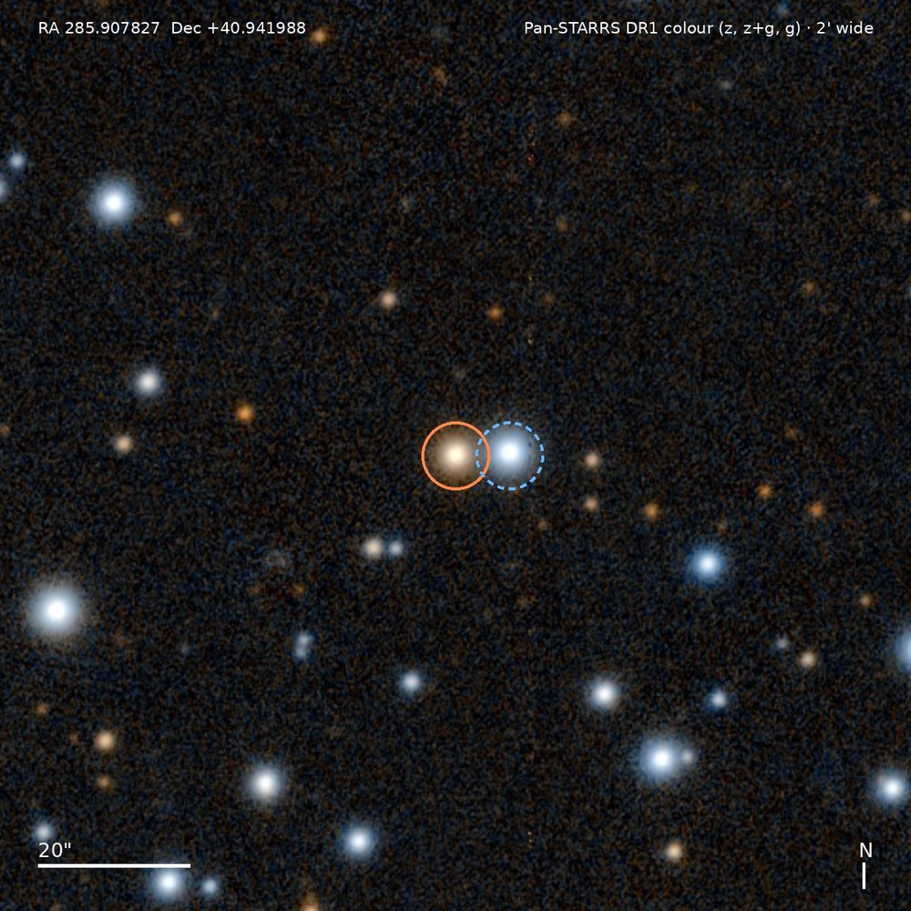
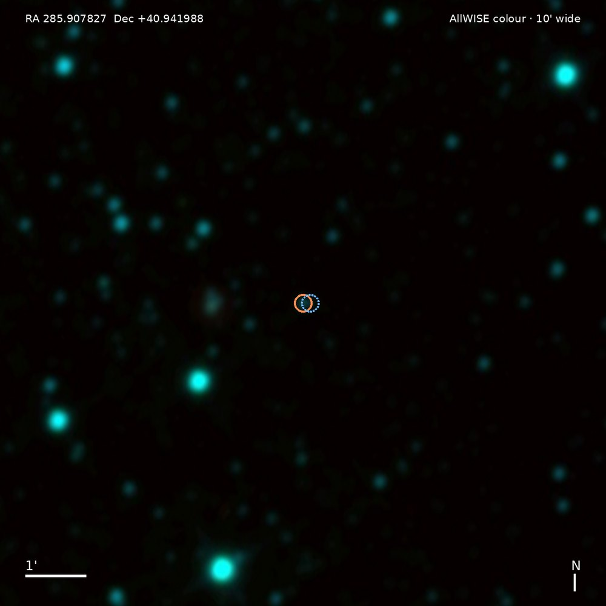
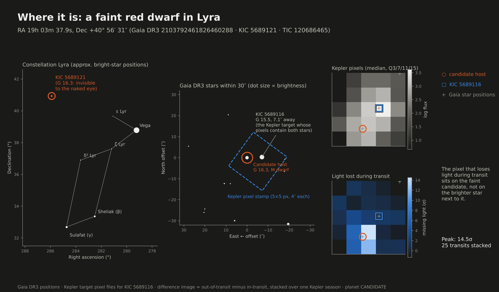
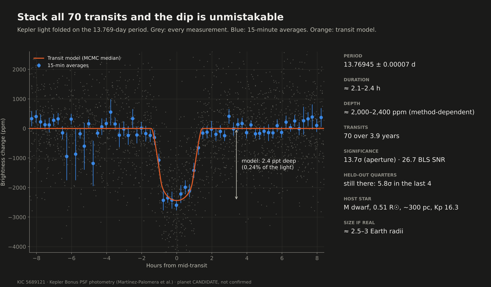
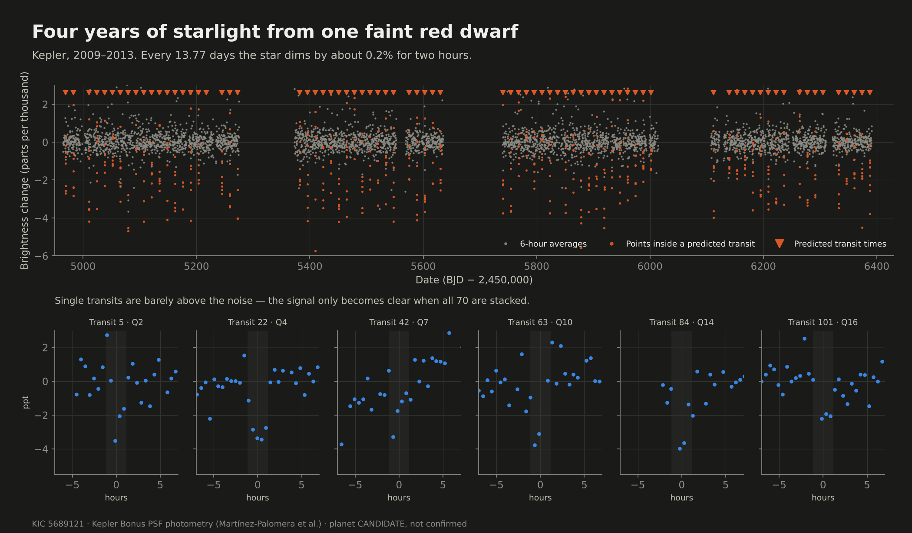
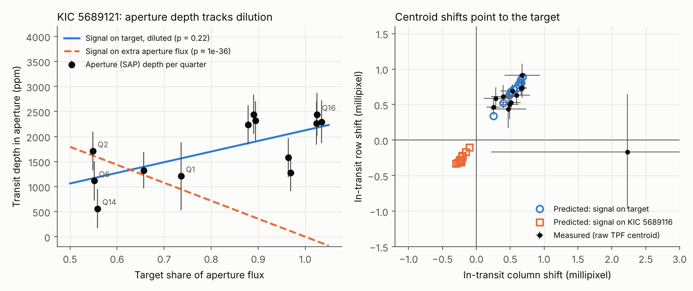

A faint red dwarf in Lyra dims by 0.24% every 13.77 days. After 24 tasks of checks it still looks like a planet. It is not confirmed, and the main open question is a hidden companion star.
Candidate, not a discoveryFalse-positive probability about 0.07Validation needs below 0.015

KIC 5689121 (orange ring) and its brighter neighbour KIC 5689116 (blue dashed, 7.1″ west). Real Pan-STARRS DR1 image, 2′ wide, north up, east left. Credit: Pan-STARRS1 / STScI via CDS hips2fits.
An unconfirmed signal is not a discovery. Neither lead is validated. "New" means absent from the catalogue snapshots we checked, not proven first. No candidate has been named, submitted or announced. Null-control results and failed leads are on this page on purpose.
The short version
Two leads, two very different outcomes
Kepler · well vetted candidate
KIC 5689121 / TIC 120686465
A repeating 0.24% dip on a faint M dwarf 298 pc (about 970 light-years) away. It survives a held-out test, a raw-pixel centroid test, a Kepler-169 exclusion and a false-positive model.
Main loopholea planet around an unseen bound companion star
Next stepadaptive-optics imaging plus a companion limit from Gaia RUWE
TESS · probably an eclipsing binary
TIC 309780779
A real, repeating 8.7236-day dip, recovered blind in each half of the data and on schedule 89 cycles later. But it is shallow, short and grazing-shaped, and the false-positive model puts about 57% on a false positive, mostly a bound eclipsing binary.
8.7236 dperiod
~400 ppmdepth, 46 events
0.57false-positive probability
Dominant scenarioeclipsing binary bound to the target (about 42%)
Imaging helps?not much: 0.57 falls only to about 0.45
Next step2-3 reconnaissance spectra, then a multi-colour transit
What we know
The Kepler dip repeats on a fixed schedule and shows in quarters held out of the search (5.8σ).
It is not Kepler-169 e, which has almost the same period 4′ away.
The missing light is on KIC 5689121, not the brighter neighbour or any other Gaia star within 30″.
No odd/even difference or secondary eclipse in either lead.
What we see
A dip about 2,400 ppm deep and 2.1-2.4 h long, repeated 70 times over four years.
A red dwarf (0.51 R☉, 3,630 K) with a brighter blue star 7.1″ west.
Shallower aperture depths where more neighbour light is in the aperture, as dilution predicts.
What we do not know
Whether a hidden companion star hosts the planet or the signal (the 0.07).
The planet's mass. The star is too faint for a realistic radial-velocity measurement.
Whether anyone has independent claim to the signal. Novelty is provisional.
What the target looks like
The sky around KIC 5689121
Centre: RA 285.907827°, Dec +40.941988° (ICRS), constellation Lyra. All images are registered to Gaia DR3 (Pan-STARRS offset under 0.1″, see registration.json). North is up and east is left. The orange ring is the candidate host; the blue dashed ring is KIC 5689116, a star about 2.1 times brighter in Gaia G that sits 7.1″ west.
2MASS near-infrared, 10′: cool stars like the host brighten at these wavelengths. Source render

AllWISE mid-infrared, 10′: coarse resolution, the pair is blended. Source renderField and zoom together: a 10′ field with the 2′ view boxed. Registered to Gaia, host orange, neighbour blue dashed.
Pan-STARRS and DSS2 views use the cutouts saved in the validation pack; 2MASS and AllWISE were fetched fresh from the same CDS hips2fits service on 11 October (parameters in docs/sky/SOURCES.json). Interactive zoom from the whole sky down to the star: Aladin Lite. Credits: Pan-STARRS1 Surveys (STScI), DSS2 (STScI/AURA, Palomar/UK Schmidt), 2MASS (UMass/IPAC-Caltech), AllWISE (NASA/JPL-Caltech/UCLA), CDS Strasbourg.
What Kepler actually sees: a few big pixels
Kepler pixels are 4″ wide, so the target and its neighbour fall on the same handful of pixels. The right panel overlays the pixels that lost light during transit on the Pan-STARRS image; the strongest (14σ and 12σ) sit on the host.
Left: Kepler pixels at true sky footprint (average brightness). Right: pixels that lost light during transit, with their significance, over Pan-STARRS.
The same 34″ patch four ways: DSS2, Pan-STARRS, Kepler pixels, missing-light map.

Where it is: Lyra locator, Gaia finder chart, Kepler stamp and difference image.Missing light per Kepler pixel in four seasons. In seasons 0-2 the peak falls on the candidate pixel. Data: CSV per season.All 114 Gaia DR3 stars within 2′. Within 30″ there are only the neighbour and a handful of faint stars, each tested. Data: CSV.
KIC 5689121 · Kepler Bonus PSF photometry
The signal
Kepler watched this field for four years. The target is too faint to have been a planet-search target, so its light comes from the Kepler Bonus background-star photometry. Folding the light curve at 13.769448 days stacks 70 transits into one clear dip.
All usable transits folded at P = 13.769448 ± 0.000065 d, 15-minute bins, with the MCMC transit model. Data: bins, model.Depth of each event (74 measured, 70 pass the stricter cut). Blue: discovery quarters. Yellow: quarters reserved before the search. The held-out events sit on the same level. Data: CSV.
13.769448 dperiod (full-baseline MCMC)
1,830-2,430 ppmdepth, by method (PSF)
2.1-2.4 hduration
5.8σin the last 4 held-out quarters

Presentation chart: all 70 transits folded, with the MCMC model.

Four years of photometry with predicted transits marked, and six single transits. Full light curve: CSV.
How depth depends on the method
The PSF depth is 1,830-2,430 ppm across box widths and baseline windows in the independent check (1,958 ± 46 ppm for a plain 2.2 h box). Against measured event-to-event and random-phase scatter that is 11-22σ; the formal error gives about 43σ and should not be quoted. The aperture (SAP) depth is shallower, 1,438 ± 105 ppm, because the aperture holds neighbour light. The original report quoted 2,165 ± 98 ppm raw PSF depth.
Is it real, and is it on this star?
Eight checks: six passed, two stay open
Repeats on schedule
70 transits in 13 quarters. The last four quarters, held out of the search, still show it at 5.8σ.
Not Kepler-169 e
That planet has P = 13.767 d, 4.4′ away. No transit ever overlaps (closest 67 h); periods differ by 32σ; the target shows no dip at any of five Kepler-169 ephemerides.
On this star
Raw-pixel centroids reject the bright neighbour at Δχ² = 934 and every other Gaia star within 30″ at 4,300 or more.
Not the bright neighbour
KIC 5689116's own light curve shows 24 ± 41 ppm at the candidate times. It would need about 1,100 ppm to host the dip.
Dilution fits
Per-quarter aperture depths track the target's share of aperture light (p = 0.22). A signal on the contaminating light is rejected (p about 1e-36).
No eclipsing-binary signs
Odd and even depths agree (0.6σ). No secondary eclipse (17 ± 59 ppm). The shape fits the star's density.
Not unique by detection strength
About 2 of 1,736 inverted null searches score as high. The case rests on the vetting, not on how loud the dip is.
Hidden companion
A planet around an unresolved bound companion (STP about 0.07) is still allowed. Imaging and a RUWE-based limit are needed.
Depth measured at the candidate ephemeris and at each Kepler-169 planet ephemeris. Only the candidate ephemeris shows a dip. The neighbour (green) shows none. Data: results/kepler/kdepth.json.A raw target-pixel centroid test using only stamp geometry and Gaia positions. Lower Δχ² is a better match to where the missing light is. Data: CSV.Aperture depth is shallow in quarters with the most neighbour light (7-pixel apertures: Q2, Q6, Q14), the opposite of what a signal on a contaminating star would do. Data: kcrowd.json.

Original validation figure: dilution model (left) and centroid test (right).
The honest negative: null searches
Ranked against all 1,736 matched inverted Kepler Bonus searches, two inverted stars pass the first screen at P > 1.5 d with BLS SNR at least 26.7 and holdout SNR at least 15.5: KIC 8701308 (4.25 d) and KIC 5283912 (8.78 d). That is an empirical false-alarm rate near 1e-3 per star, so about two null-level signals are expected in a survey this size. Detection strength alone cannot single KIC 5689121 out. Script: null_fap2.py.
A test that did not work
The Kepler Bonus CENTROID_COLUMN/ROW series show no in-transit response at all (χ² 25.5/26 for zero), so they appear model-derived and were not used. Only the raw target-pixel centroid test is quoted.
Statistical validation
How likely is a false positive?
Where the Kepler candidate sits against the bar for statistical validation. Both numbers are TRICERATOPS outputs from the 11 October validation pass.
TRICERATOPS (Giacalone et al. 2021) weighs planet and false-positive scenarios against the folded light curve, the star and the nearby field. We ran it offline with a field population built from the Gaia DR3 stars already in the evidence pack. A candidate is "statistically validated" when the false-positive probability is below 0.015. Neither lead is there.
Every run (1,000,000 draws each). Kepler candidate: 0.058, 0.089, 0.058, 0.069 (mean 0.069); with a G = 22.5 background 0.058 and 0.088. TESS lead: 0.556, 0.579, 0.568. The AO and speckle rows use hypothetical contrast curves for what-if only, not observations. Data: fpp_summary.json.What the false-positive probability is made of. The Kepler candidate is almost all "planet", and its remaining risk is a planet around a bound companion. The TESS lead is dominated by an eclipsing binary bound to the star (best fit: a 0.18 M☉ pair, grazing, diluted by the K dwarf).
Why imaging cannot fully rescue either one: companions inside about 0.1″ (about 30 AU at 298 pc) stay allowed even after a typical AO contrast curve. Gaia RUWE 0.98 already disfavours some of them, but TRICERATOPS 1.1 does not use it. A MOLUSC companion file would. Resolved neighbours were not passed to TRICERATOPS (that needs a Kepler PRF model), so NFPP is reported as 0; those scenarios were excluded with the direct light-curve and centroid tests above instead.
To-scale model, not a photograph: orbit against Mercury, size against Earth and Neptune, and the host star as it would appear in the planet’s sky. Zero-albedo equilibrium temperature of about 420 K is a model. Data: model_numbers.json.
TIC 309780779 · TESS
The other lead: real signal, probably the wrong cause
Host: K dwarf, 5,013 K, 0.685 R☉, 74.9 pc, TESS magnitude 10.03. Light curves are TESS-SPOC FFI products plus two QLP sectors, 92,860 cadences.
Presentation fold at the saved ephemeris: a dip of about 400 ppm lasting about 1 hour. This is not an independent test. Data: display bins.Blind period search on the real and inverted light curves, in the full data and in each half. The real signal shows up at 8.7236 d in each half; the inverted curve does not come close. Data: results/tess/bls_full.json, bls_disc.json.Depth is consistent across odd/even transits (1.3σ), across three cadence eras, and in the held-out late sectors, where the ephemeris from sectors 1-38 predicts the transit 89 cycles later within 0.12σ (−0.95 min, prediction ±7.5 min). 22 of 22 late events are positive.Original validation figure: frozen-ephemeris holdout and an all-phase secondary-eclipse scan. Phase 0.5 depth is −20 ± 26 ppm; the largest off-transit dip in 377 phase trials is 3.2σ.
What passes
Recovered blind in each half of the data (SDE 12.6 and 12.9 versus 7.8 best inverted).
Depth flat at 401 ± 30 ppm across eras, odd/even clean, no secondary.
No catalogue match within 5′ or at 1° harmonics.
Gaussian-PSF difference imaging is target-consistent in 16 of 16 sectors (old, approximate test).
Why it is weak
With a density prior: impact parameter b = 0.95 ± 0.015, Rp ≈ 2.05 R⊕, T14 = 1.07 h, 14% of the posterior grazing. Without it, 85% grazing and a large radius: the data cannot tell a small planet at high b from a larger grazing body.
TRICERATOPS FPP about 0.57, mostly a bound eclipsing binary (SEB about 0.42).
Not re-tested with the official TESS PRF (MAST was unreachable here).
What would move it: two or three reconnaissance spectra (the star is T = 10) for a double-lined binary or a large velocity trend, and a multi-colour or CHEOPS transit for colour dependence. A 2 R⊕ planet would only produce about 2 m/s, so a true mass needs a precision spectrograph.
What was searched, and the controls
Searches and null controls
A search is only worth something if it also finds nothing where nothing should be. Every Kepler search was paired with an inverted light curve of the same star, which cannot contain real transits.
Real Kepler Bonus searches versus matched inverted nulls on the same stars: no excess in either stage (ranks 65-576 and 577-1800). Source tables: extension README.Stars per search on a shared scale. These are different kinds of count and are not added into one survey size.
Rest of the Kepler run
In ranks 577-1800 the strict-screen survivors are known false-positive neighbours (the KIC 4544570 field, KOI K06244.01) or deep 0.3-1% dips on G about 18.5 background stars, likely blends. Three real hits also appear inverted, so they are variability. Nothing approaches KIC 5689121. One faint 2.64 d signal (KIC 6629201) is unresolved and unlocalised.
Earlier controls
Codex reported 5 first-screen passes in 100 inverted TESS searches and none in 64 inverted Kepler searches. Known planets (LHS 3844 b, Kepler-138 c/d) were recovered as positive controls. These are diagnostics, not planet probabilities.
What failed
TIC 305054512
Missing light lands 37.3″ away at 54σ nominal; nearby sources fit better. Blend-like, rejected as on-target.
KIC 10794841 (1.41 d)
Secondary dimming and weak aperture support. Not carried forward.
Short-period hits (1.0-1.5 d)
Contact binaries every time. SDE of 9 or more alone lets noise through.
TIC 358559650, 94753488
Persistent but broad or variable dimming with unresolved source; no defensible planet.
Checking the checkers
Independent check and integrity
A separate agent rewrote the key measurements from scratch without reading the main analysis code. Every claim passed, with caveats folded back into the text.
Claim
Verdict
Independent numbers
Kepler depth 2,100-2,400 ppm at more than 15σ
Pass, with caveat
1,958 ± 46 ppm plain 2.2 h box; 1,830-2,430 ppm across methods; 11-22σ against measured scatter (43σ formal)
No overlap with Kepler-169 e
Pass
Closest 67.3 h; fold on that ephemeris 80 ± 39 / 14 ± 45 ppm
2 of 1,736 inverted nulls as strong
Pass
KIC 8701308 (4.254 d) and KIC 5283912 (8.785 d)
TESS late half on frozen ephemeris
Pass
Offset +4 min (−12 to +11); late depth 382-444 ppm at 9-10σ
TESS phase-0.5 depth near 0
Pass
−44 ± 30 ppm; sectors 61+ alone −94 ± 44 ppm (a 2σ brightening, not an eclipse)
Release archives were downloaded and their SHA-256 hashes match the archive review.
Sky images are registered to Gaia DR3 positions; median offset under 0.1″ for Pan-STARRS.
Adaptive-optics imaging (Keck/NIRC2 or similar; Kp 16.3, K 12.97).
A companion limit using RUWE 0.98 (MOLUSC), then rerun TRICERATOPS with both.
A multi-band transit: a planet around a companion predicts colour-dependent depth.
Realistic endpoint: statistically validated, if imaging and RUWE squeeze the companion scenario below about 1%. A radial-velocity mass is not realistic for this faint star.
TIC 309780779
Two or three reconnaissance spectra for an SB2 or velocity trend.
Official-PRF pixel test via TESScut.
Multi-colour or space-based transit for chromaticity and shape.
Until then it is a candidate with a false-positive probability near 50%.
Hard obstructions in this environment: MAST, the Gaia archive, VizieR and ExoFOP were unreachable, so there was no live TOI/CTOI check, no official-PRF TESS redo and no Gaia RUWE for TIC 309780779. Telescope work (imaging, spectra, multi-band transits) was out of reach. Re-check TOI/CTOI and the literature on the day of any announcement.
How we got here
9 Oct A TESS transit search over about 540 nearby K and M dwarfs begins, with a vetting ladder from odd/even through pixel localisation.
10 Oct A parallel Kepler Bonus search finds KIC 5689121. Raw FITS rechecks reproduce its depth; the repo and this page go public.
11 Oct The Kepler search extends to 1,672 more stars with null controls. A validation pass adds the Kepler-169, centroid, dilution, holdout and TRICERATOPS tests plus an independent check.
Deep dive: the original evidence, unchanged
The sections below are the 10 October evidence pages, kept in full with their original figures. Where later work supersedes a sentence it is marked.
TESS evidence: pixel localisation and original figures
Directly inspected saved outputs
What TESS actually shows
46events in the saved search
45 / 16events / sectors in the pixel test
3.61"centroid offset, 0.40 nominal sigma
Presentation plot at the saved period and epoch, using the saved 0.75-day cleaning method. Standard errors of binned flux are shown. This is not an independent search or held-out test. Bin valuesSaved pixel-source amplitudes are positive in 16/16 sectors. Their positivity supports consistency, not the probability of a planet. Pixel measurementsCrop of the original diagnostic: source images, missing-light images and aperture-depth curves. Depth is not flat with aperture radius in every sector. Full 16-sector diagnosticExcerpt of the original joint source-position panel; open the full image for its complete labels. This uses an approximate Gaussian PSF, not an official TESS PRF. The nominal offset significance does not calibrate blend probability.
The short duration needs explanation.
A grazing geometry was suggested in an earlier fit, but its saved fit output is absent. We do not promote that suggestion into a measured impact parameter or radius. Update, 11 October: a TRICERATOPS run later gave a false-positive probability of about 0.57 and a frozen-ephemeris holdout was added (both in the TESS section above). This original text describes the 10 October evidence.
Counts, odd/even test and time conventions
The cache has 17 sector labels and 92,860 cadences. The search counts 46 events; pixel localization uses 45 events in 16 sectors. These are different subsets. Odd/even depths differ by 1.33 sigma. That alone does not rule out an eclipsing binary. The saved depth_half_ppm is not a phase-0.5 secondary eclipse.
Verify original FITS time conventions before scheduling any follow-up from the numeric epoch. The digest does not provide an observing schedule.
Kepler evidence: original report figures and aperture recheck
Saved measurements inspected / local aperture check reproduced
The Kepler candidate
The saved search code reserves the last four usable quarters before searching. The received discovery-only fit predicts their timing and shape. The original plots below are kept intact. We independently reran the supplied fixed-ephemeris aperture vetter on the original FITS, reproducing the corrected measurements.
Original report figure. 70 usable local PSF events, 22 reserved events. Corrected aperture local SNR: 13.73 overall, 5.84 held out. PSF and aperture use the same photons, not independent telescopes. Source PDFThe report favors the candidate over brighter KIC 5689116, 7.1 arcsec away, in all 13 observed quarters using official PRF templates. The quarter fits, pixels and calibration manifest are now received. The no-shift, spatial-plane stress test still prefers the target in 13/13 quarters, with summed delta-chi-square 579.27. This is not calibrated FPP.Independent execution of the supplied local vetter using the original FITS and SAP_FLUX_ERR. Exact saved results reproduced. Same data and known ephemeris, not new blind validation. Complete recheck output
Novelty is provisional
The supplied audit reports no matching signal in its catalog snapshots or indexed literature checks. Kepler-169 e has a similar period but is 2.80 days out of phase. A prior possible MELANGE-3 membership is known. None of this proves exclusive discovery priority.
Unresolved eclipsing companions, background blends, PRF systematics and correlated noise. A TRICERATOPS false-positive probability of about 0.07 was added on 11 October (see above); no high-resolution imaging, reconnaissance spectra or new ground-based transit exists yet. Corrected aperture depth: 1438.5 +/-104.8 ppm overall; 1264.6 +/-216.4 ppm in reserved data.
Starting from the upstream nearby-star catalog, the extension distributed ranked target slices, cached two surviving light curves, sped up BLS candidate generation and tested the missing-light source with Gaia neighbors. The public record includes all received hit lists, the speed patch, corrected Gaia IDs, pixel outputs, coverage reconciliation and the failed 305054512 source hypothesis.
Periods 1-25 days, 20-minute bins, five trial durations and one signal per star trade speed against sensitivity. The full historical environment and complete remote per-star result set are not shipped. Stored controls are incomplete. These limits stay attached to the claimed coverage.
The TESS wrapper uses per-season candidate generation, coherent refinement and a final-season split. Its Kepler Bonus expansion selects 64 bright eligible background M dwarfs from 1,800 catalog-cut sources, reserving the last 25% of usable quarters before period search. Both scans preserve input hashes and fixed-ephemeris checks.
The complete code, dependency versions, search outputs, catalogs, held-out measurements and invalidated versions are retained. Full raw data are available in the three source archives. Known hosts and source reductions are not silently turned into fresh discoveries.
Known LHS 3844 b and Kepler-138 c/d were recovered as explicit positive controls. Strong synthetic transits test recovery, alternating-depth eclipses and single-event glitches. A held-out-flux replacement leaves the discovery ephemeris and search statistics unchanged in the wrapper smoke tests. That checks direct leakage, not survey completeness.
Raw-flux local fits use exposure integration, out-of-transit baselines, empirical scatter, per-event and per-sector statistics, leave-one-event-out tests and conditional off-phase controls. Correlated phase controls do not estimate survey-wide FAP.
Original known-planet recovery plot. This is a control, not a new candidate. Control measurementsThe reopened timing-clean signal persists, but broad shape and varying amplitude prevent a defensible planet detection. Final 44-star rerun dispositions
All survivors, rejected hypotheses and superseded versions
TIC 94753488 remains broad periodic dimming with unresolved source. TIC 456716455 is strongly baseline-sensitive. TIC 113710966 has residual modulation/alias concerns. TIC 244869034's timing-safe screen pass fails robust local/holdout checks. KIC 10794841 has secondary dimming and weak aperture support. Original v1 and pre-final results remain inspectable, not promoted to current conclusions.
The record includes NASA confirmed/TOI snapshots, CTOIs, TCEs, eclipsing binaries, RAVEN, SIMBAD, Gaia variability and neighborhood/period checks. Conservative host exclusions do not prove a host unsearched elsewhere. Missing coordinates and proper-motion limits remain relevant. Candidate novelty is provisional.
EVEREST/K2SFF, TGLC, CDIPS and PATHOS were investigated as future pools, not represented as completed scans. Alternate reductions of TESS exposures share photons. Catalog eligibility counts are not completed-search counts.
Extension: 1,672 more Kepler stars, with a null control
Codex's own Kepler Bonus code was run unchanged on ranks 65-1800 of the same frozen selection (1,672 searched), with the last quarters reserved before searching and a matched inverted run on the same stars. Ranks 65-576: real 10 first-screen signals, inverted null 10. Ranks 577-1800: real 19 signals on 18 stars, null 22 on 19 stars. No excess over the null in either stage. In the second stage the strict-screen survivors are known false-positive neighbors (the KIC 4544570 field, KOI K06244.01) or deep 0.3-1% dips on G~18.5 background stars, likely blends. Three of the real hits also appear inverted, so they are variability, and KIC 9851000 is the eclipse of a known false-positive neighbor. Nothing approaches KIC 5689121. One faint 2.64 d signal (KIC 6629201) is unresolved and unlocalized. No candidate was named or submitted. Details, tables and scripts.
Every file, with its location
Search the complete public-tree inventory and bulk-data map by filename or path. Git files open directly. Bulk paths identify the exact source-archive location; download and merge all three archives to resolve them locally.
Credits: NASA Kepler and TESS; Kepler Bonus (Martínez-Palomera et al.); Pan-STARRS1 Surveys and the PS1 archive (STScI); DSS2 (STScI/AURA, Palomar Observatory / UK Schmidt); 2MASS (UMass and IPAC/Caltech); AllWISE (NASA/JPL-Caltech/UCLA); Gaia DR3 (ESA/Gaia/DPAC); CDS Strasbourg hips2fits and Aladin. Attribution detail: SOURCES.md.
Read everything that is here
Start with the synthesis, then inspect the numbers. The file inventory gives every received path, size and hash. The LLM entry point also maps bulk files to their source archives.
Original TESS scripts retain historical scratch paths and depend on an incomplete upstream environment. Codex requirements and measurements are now received; merge the three archive folders before reproduction. We have not rerun the entire search. The historical TESS extension still lacks its complete original environment.
Large data should be checksummed release assets or source-download manifests rather than oversized git blobs. The present tree is small and includes the two TESS NPZ caches. All received archives passed integrity checks and a secret-pattern audit.